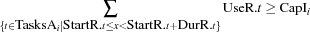

6.3 Cumulative Scheduling
The following conventions hold. The argument StartR is a record of finite domain integers denoting start times of tasks. The argument DurR is a record of integers denoting durations of tasks. The argument UseR is a record of integers denoting the resource usage of tasks. The arities of StartR, DurR, and UseR must be equal.
The integers and literals occurring in TasksLIvv denote the tasks to be scheduled. Each element of TasksLIvv must occur in the arity of StartR. The tasks occurring in the vectors TasksLIv are scheduled on the same resource. The vector CapIv is a vector of integers denoting the capacity of the resources. The number of elements in the vectors TasksLIvv and CapIv must be equal.
-
cumulative {Schedule.cumulative+TasksLIvv+StartR+DurR
+UseR+CapIv}creates a propagator, which states that for all resources
 and time instants
and time instants  , the resource usage does not exceed the available capacity:
, the resource usage does not exceed the available capacity: The propagator does not use edge-finding.
Assume that we have the following resources and tasks:
Resource
Capacity
r5s2Task
Resource
Duration
Usage
ar55br23cs72ds43es95Provided that no limit on the start times of the tasks are given, the following
Tasks = tasks([a b] [c d e])
Start = {FD.record start [a b c d e] 0#FD.sup}
Dur = dur(a:5 b:2 c:7 d:4 e:9)
Use = use(a:5 b:3 c:2 d:3 e:5)
Cap = cap(5 2)
{Schedule.cumulative Tasks Start Dur Use Cap}propagates that the resource usage does not exceed the resources' capacities (for
FD.recordsee *).-
cumulativeEF {Schedule.cumulativeEF+TasksLIvv+StartR+DurR
+UseR+CapIv}creates a propagator, which states that for all resources
and time instants , the resource usage does not exceed the available capacity: This propagator generalizes the edge-finding propagation in
Schedule.serializedto deal with non-unary resources.-
cumulativeTI {Schedule.cumulativeTI+TasksLIvv+StartR+DurR
+UseR+CapIv}creates a propagator, which states that for all resources
and time instants , the resource usage does not exceed the available capacity: This propagator generalizes the edge-finding propagation in
Schedule.taskIntervalsto deal with non-unary resources.-
cumulativeUp {Schedule.cumulativeUp+TasksLIvv+StartR+DurR
+UseR+CapIv}creates a propagator, which states that for all resources
and time instants , the resource is at least as large as the available capacity: 